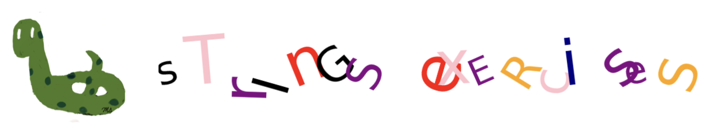
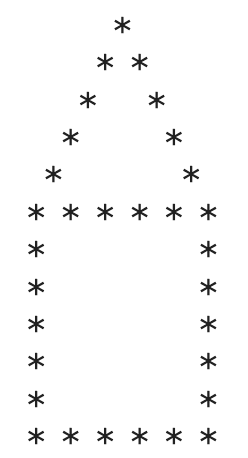

Strings Exercises#

Question-1#
For the given text below, print versions that are capitalized, in uppercase, in lowercase, and titled.
text = 'thE gOOd, The Bad aNd The uGLY'
Question-2#
For the given text below, answer the following questions by applying the appropriate methods and print the outputs:
Does it start with ‘T’?
Does it end with ‘c’?
Find the index of the first occurrence of ‘T’.
Find the index of the second occurrence of ‘T’.
Find the number of characters.
Are there any digits in the text?
Replace ‘T’s with ‘R’s.
Swap the cases (Swap the cases (convert lowercase letters to uppercase and vice versa).
text = 'TiTANiC'
Question-3#
Write a program that prompts the user for a 6-digit positive number. Find the sum of the digits of this number without using algebraic operations other then addition.
Example: If the given number is 123456, then the sum of digits is 1+2+3+4+5+6=21
Question-4#
Write a program that prompts the user for a 4-digit positive number. Swap the first two digits of the given number with the last two digits and print it.
Avoid using algebraic operations and instead use string indexing.
Example 1: If the given number is 1234, then print 3412.
Print format: 1234 —- swap—> 3412
Example 2: If the given number is 6789, then print 8967.
Print format: 6789 —- swap—> 8967
Question-5#
Use the three variables provided below to construct the string ‘XFoas’
x, y, z = 'fLoRida', 'tExaS', 'aRizOna'
Question-6#
Extract the height of the first player without the ‘cm’ part using the provided player information.
Use the find() function.
If you change the variable name from player1_info to player2_info in your code, you should obtain the height of the second player.
player1_info = 'robert_brown,Height:1.834cM,Weight:75.25kg'
player2_info = 'richard_smith,heighT:1.92cm,Weight:98.65kg'
Question-7: House#
Display the following house by using the repetition of strings.

Question-8: Password#
Write a program that generates a password consisting of one random letter, punctuation, and non-zero digit.
Import letters, punctuations, and digits from the string module.
Choose random integers that can be an index for a letter, punctuation, or digit.
Hint: Use the random.randint(low, high) function with appropriate low and high values.
Refer to the appendix at the end of the book for details on the random module.
Question-9#
Use the provided variables and f-strings to output the statement:
I am in TENth grade and my CHEMISTRY teacher is Mr. Adams.
grade, course, teacher = 'ten', 'cHemisTry', 'mr. aDams'
Question-10#
Use the given variable to produce the string teXas.
state = 'texas'
Question-11#
Write a program that asks the user to enter a country name, allowing lowercase, uppercase, or mixed-case characters.
Then, prompt the user to provide the index of a character within the country name.
Generate a new string by swapping the case of the character at the specified index.
Sample Output:
Enter a country name: fRaNce
Enter the index of the character to swap case: 4
fRaNce becomes fRaNCe
Question-12#
Use the find method to display the month part of the following date.
date = '/2010?June/25'